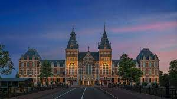
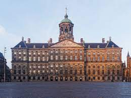

Het Rijksmuseum in Amsterdam is een van de 16 rijksmusea van Nederland. De collectie biedt een overzicht van de Nederlandse kunst en geschiedenis met onder andere werken van de 17e eeuwse Nederlandse meesters als Rembrandt, Vermeer en Frans Hals Het museum is sinds 1885 gevestigd in het Rijksmuseumgebouw dat ontworpen is door Pierre Cuypers. Het Rijksmuseumgebouw kent 80 zalen en is gelegen tussen de Stadhouderskade en het Museumplein in Amsterdam-Zuid. Daarnaast kent het Rijksmuseum nog een dependance op de luchthaven Schiphol.
 Het Koninklijk Paleis op de Dam (bekend als het Paleis op de Dam) is een paleis in de binnenstad van Amsterdam. Het paleis is van oorsprong het Stadhuis van Amsterdam maar momenteel in gebruik bij het Koninklijk Huis als ontvangstplaats en tentoonstellingen. Het werd tussen 1648 en 1665 gebouw als stadhuis naar het ontwerp van architect Jacob van Campen en ingewijd op 29 juli 1655. Het bouwwerk wordt gezien als Nederlands belangrijkste historische en culturele monument van de Gouden eeuw. Van september 2005 t/m juni 2009 was het paleis gesloten voor het publiek vanwege restauratie werkzaamheden. Op 13 juni 2009 is het paleis weer geopend door Koningin Beatrix.